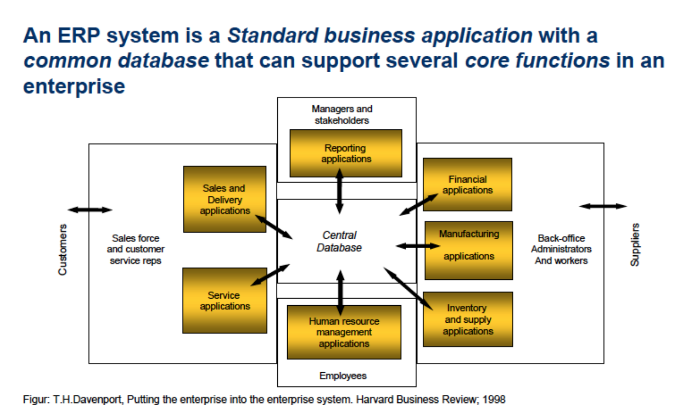

• Developing BPMN models
• Computer-based IS + examples of the identified components
• Reengineering vs Continuous improvement
• E-commerce (2017)
• Porters "5 power" (2017)
• Business Architecture
• Transaction processing systems
• Decision support system
• Enterprise Architecture
e.g. questions and answers:
reasons for the use of modelling in IS dev: Communication; Sense making; Quality Assurance; Model Deployment; Requirements and Design.
IT use can: Ensure economic, personal, organisational(business) and societal gain.
Goals of the IS-methodology –> Value creation
Candidates acquire knowledge about:
- What an information system is
- The relation between business strategy, organizational strategy and ICT strategy.
- Taxonomies for different information systems.
- Methodologies for the deployment of information systems.
- Methodologies for requirements engineering.
- Ethics and use of information systems.
Candidates are able to:
- Elicit requirements for information systems.
- Model business processes using BPMN.
General competence - candidates can:
- Contribute to consultancy activities in the context of the introduction of information systems in (big) organizations.
NB - Slides from lectures are also part of the curriculum - NB
We live in an information economy. Information itself has real value, and in order to stay competitive, organizations require a steady flow of information about their business partners, competitors, customers, employees, markets, and suppliers. Information systems are increasingly being used to gather, store, digest, analyze, and make sense out of all this information
To be an effective manager in any area of business, you need to understand that information is one of an organization’s most valuable resources. Information is not the same thing as data, and knowledge is different from both data and information. These concepts will now be explained.
"Data"
consists of raw facts, such as an employee number, total hours worked in a week, an inventory part number, or the number of units produced on a production line."Information"
is a collection of data organized and processed so that it has additional value beyond the facts themselves. For example, a sales manager may want individual sales data summarized so it shows the total sales for the month.
Keywords: Input, Process, Output and Feedback."Knowledge"
is defined as awareness and understanding of a set of information and how that information can be put best to use.
Combining and converting data to useful information is called a process. A set of logically related tasks performed to achieve a defined outcome. The process of defining relationships among data to create useful information requires knowledge. Information is essentially data made more useful through the application of knowledge.
The value of information is directly linked to how it helps decision makers achieve their organization’s goals. Fundamental to the quality of a decision is the quality of the information used to reach that decision. The importance of each of these characteristics varies depending on the situation and the kind of decision you are trying to make.
Characteristics of quality information (BAT SCACC):
| Characteristic | Definition |
|---|---|
| Belivable | Info can be trusted |
| Accurate | Info without errors (bad data (garbage in) => bad info (garbage out)) |
| Timely | Info is delivered when needed |
| Secure | Only accessible for authorized users |
| Complete | Contains all important facts |
| Accessible | Easily accessible in the right format and at the right time |
| Consistent Representation | The same info is represented in the same way |
| Consise | Info is to the point.. Giving a lot of information clearly and in a few words |
We say that an information system (IS) is a set of interrelated components that collect, manipulate and process data into information, as well as providing feedback;
An information System assembles, stores, processes and delivers information relevant to an organisation (or to society), in such a way that the information is accessible and useful to those who wish to use it, including managers, staff, clients and citizens. An information system is a human activity (social) system which may or may not involve the use of computer systems.
(Buckingham et al., 1987).
An information system provides a feedback mechanism to monitor and control its operation to make sure it continues to meet its goals and objectives.
The feedback mechanism is critical to helping organizations achieve their goals, such as increasing profits or improving customer service.
| Characteristic | Definition |
|---|---|
| Efficiency/Speed | Measure of what is produced divided by what is consumed |
| Effectiveness/Precision | Measure of the extent to which a system attains its goals |
| System performance standard | Specific objective of the system (for example is the system conform the GDPR?) |

Information systems can be manual or computer based (CBIS).
Businesses can use IS to increase revenues and reduce costs, solve problems and make decisions. An organization’s technology infrastructure includes all the hardware, software, databases, networks, people, and procedures that are configured to collect, manipulate, store, and process data into information. The technology infrastructure is a set of shared IS resources that form the foundation of each computer-based infor- mation system.

| Component | Description |
|---|---|
| Hardware | Computer equipment used to perform input, processing, storage and output activities |
| Software | Programs operating with computer |
| Databases | Organized collection of facts and information |
| Telecommunications | Carry out tasks through computer networks |
| People | Are the most important element in most CBISs |
| Procedures | The strategies, policies, methods and rules for using a CBIS |
Using a CBIS involves setting and following many procedures (a set of steps that need to be followed to achieve a specific end result) including those for the operation, maintenance, and security of the system.
Good procedures can help companies take advantage of new opportunities and avoid lengthy business disruptions in the event of natural disasters. Poorly developed and inadequately implemented procedures, however, can cause people to waste their time on useless rules or result in inadequate responses to disasters.
The three types:
Most organizations have a number of different information systems. When considering the role of business managers in working with IS, it is useful to divide information systems into three types;

Steps for creating/modifying business systems:
IS literacy: Knowledge of how and why technology is applied in business.
"Organization"
An organization is a group of people that is structured and managed to meet its mission or set of group goals.
Organizations are considered to be open systems, meaning that they affect and are affected by their surrounding environment. Providing value to a stakeholder (customer, supplier, partner, shareholder, or employee) is the primary goal of any organization.
Within an organization, information systems are developed, or re-developed, with the aim to support value addition. Cost reduction, productivity and competitive advantage are some of the motivations.
Porters five powers is used to help analysing the nature of competition within an industry. It helps us understand and assess the industries profitability and attractiveness.

The way organizational subunits relate to overall organization. Organizational structures are subunits of an organization, and in which way they relate to the overall organization.
| Subunits | Description |
|---|---|
| Traditional (tree) | Hierarchy of decision making and authority flows: From the strategic management at the top down to operational management and nonmanagementemployees |
| Flat | Reduced level of management layers and empowers employees at lower levels |
| Project | Centered on major products or services. Many project teams are temporary |
| Team | Centered on work teams or groups. Team can be temporary or permanent, depending on tasks |
| Virtual | - Uses individuals, groups, or complete business units in geographically dispersed areas. - Can reduce costs for an organization - Also allows colaborative work: Managers and employees can effectively work in groups, even those composed of members from around the world |
| Definition | description |
|---|---|
| Organizational culture | the major understanding and assumptions for a business |
| Organizational change | how organizations plan for, implement, and handle change |
| Change model | representation of change theories that identifies the phases of change |
| Unfreezing | ceasing old habits and creating a climate receptive to change |
| Moving | the process of learning new methods and systems |
| Refreezing | reinforce changes to make the new process accepted |
| Organizational learning | adapting to new conditions or altering practices over time |
| Continuous improvement | Constantly try to improve business processes and add value to products and services |
| Reengineering | Radical redesign of business processes, organizational structures, information systems, and values of the organization to achieve a breakthrough in business results. This implies making fundamental changes in the way a company does business. |
| Technology diffusion | a measure of how widely technology is spread |
| Technology infusion | a measure of how deeply imbedded technology is in an area |
| Quality | ability of a product to meet or exceed customer expectations. |
| Techniques used | total quality management and six sigma |
| Return of Investment (ROI) | profits generated as a percentage of the investment in IS |
| Earning growth | the increase in profit |
"Business process"
consists of a set of activities that is performed in an organization. These activities are coordinated to jointly realize a business goal.
when users are presented with a new technology, two factors influence their decision about how and when they will use it:

Business transactions executed electronically between companies, consumers or the public sector.
Some common subsets of e-commerce are;
| Subset | Description | IMG |
|---|---|---|
| Business-to-Business(B2B) | All the participants are organizations. An organization will use both: – Buy-side e-commerce to purchase goods and services –Sell-side e-commerce to sell products to its customers |
 |
| Business-to-Consumer(B2C) | Customers deal directly with an organization throug disintermediation (The elimination of intermediate organizations) |
 |
| Consumer-to-Consumer(C2C) | Consumers selling directly to other consumers |  |
| Consumer to Business(C2B) | Consumers create value and businesses consume that value. |  |
| E-government | Use of information and communications technology (electronic communications devices, computers and the Internet) to provide public services to citizens and other persons in a country or region. |  |

Define effective e-commerce model and strategy
A subcategory of e-commerce that focus on transactions via mobile devices. So people can do their business transactions anywhere they go as long as they can access the internet on their smartphones and can perform transactions with just a few taps on the screen.
- Reduce cost - Increase accuracy - Speed flow of goods and information - Improve customer service

This chapter covers the many different types of business information systems.
An information processing system for fundamental business transactions involving the collection, modification and retrieval of all transaction data. The system is an organized collection of people, procedures, software, databases and devices used to record these transactions.
"Transaction"
Any business-related exchange such as inventory control, payments to employees, sales to customers, or payments to suppliers.
TRANSACTION = INTERACTION + EXECUTION
| Type | Description |
|---|---|
| On-line system | Direct connection between operator and the TPS. They provide immediate result and used to process a single transaction at a time. |
| Batch-processing system | Transactions are grouped together and processed as a unit. |

A collection of software packages, which ties all of an enterprise's various functions into a cohesive database. These packages affect all aspects of the IS environment to support how the firm runs its business.
An ERP system is a set of integrated programs that manage a company’s vital business processes through real-time monitoring.
"Business process"
Set of coordinated and related activities that takes one or more kinds of input and creates an output of value to the customer of that process


| Pros | Cons |
|---|---|
| -Elimination of costly, inflexible legacy systems -Improvement of work processes -Increase in access to data for operational decision making -Improvement of work processes -Upgrade of technology infrastructure |
-Expense and time in implementation -Difficulty implementing change -Difficulty integrating with other systems -Difficulty in loading data into new ERP system -Risks in using one vendor -Risk of implementation failure |
A system that includes:
planning, executing and controlling all activites involved in raw material sourcing and procurement.
Convert raw materials to finished products, and warehousing and deliver finished product to customer.

The process for developing a production plan includes:
sales forecasting, sales and operations plan, demand management, detailed scheduling, materials requirement planning, purchasing, production and sales ordering.
A system that helps a company manage all aspects of customer encounters, including marketing and advertising, sales, customer service after the sale, and programs to retain loyal customers. That is, understanding and anticipating the needs of current and potential customers.
"CRM software"
Software that automates and integrates the functions of sales, marketing, and service in an organization
 Key features of a CRM system:
Key features of a CRM system:
MISs produce fixed, regularly scheduled reports based on data extracted and summarized from the firm’s underlying transaction processing systems (TPSs) to managers and decision makers.
| Input | Output |
|---|---|
| TPS and ERP systems | - Scheduled reports - Demand reports - Drill down reports - Provide detailed data about a situation |
Characteristics
| Types | Description |
|---|---|
| Financial MIS | provides financial information |
| Manufacturing MIS | monitor & control the process of converting raw materials to finished goods |
| Marketing MIS | supports product development, distribution, pricing decisions, promotions and sales forecasting |
| Human resource MIS | Concerned with activities related to employees and potential employees |
| Accounting MIS | Provides info on accounts payable, accounts receivable, payroll, etc. |
Organized collection of people, procedures, software, databases and devices used to help make decisions that solve problems.
DSS is used for problem-specific decision making for semistructured and unstructured problems and is used at all levels in an organization.
Programmed vs Nonprogrammed Decisions:
| _ | Description | _ |
|---|---|---|
| Programmed decisions | - Made using a rule, procedure, or quantitative method - Easy to computerize using traditional informationsystems |
|
| Nonprogrammed decisions | - Decisions that deal with unusual or exceptional situations - Not easily quantifiable |
DSS |
Characteristics
For DSS capabilities and components, see Wikipendium
How DSS differs from MIS:

Knowledge-based decision support systems are systems designed to ensure more precise decision-making by effectively using timely and appropriate data, information, and knowledge management for convergence industry. These systems refer to decision-making based on relevant knowledge, which is based on artificial intelligence, and on the application of information and communication technologies.

The collection of rules that contribute to a “decision”
can be structured as a decision tree. The tree is simply a representation of a collection of rules.

The rules can also be represented using a table.
This table represents the exact same rules as the decision tree does, in the same order.

Problems with Rules
• Fail to work if a problem is not anticipated by rules.
• Can interact in complex ways.
• Huge rule sets are difficult to maintain
• Are not flexible (contextualizable)
In CBR “knowledge” is held in a case base of real prior problems and their solutions.
e.g.
Case-based diagnosis is common:
• physician matches new case with one seen
previously and uses the diagnosis of the old case
as a starting point.

Benefits of CBR
• May work better than rule-based or modelbasedfor natural domains.
• Does not require extensive analysis of domainknowledge.
• Existing data and knowledge - case histories,repair logs - are leveraged.
• Shortcuts complex reasoning - may be quicker than rule-based or model-based.
Problems with CBR
Special case of DSS, designed to support higher-level decisions (strategic planning)
Is an interactive computer based system that facilitates a number of decision-makers (working together in a group) in finding solutions to problems that are unstructured in nature. They are designed in such a way that they take input from multiple users interacting simultaneously with the systems to arrive at a decision as a group.
Consists of most DSS elements + software for providing group support
Characteristics of a GDSS That Enhance Decision Making:
• Anonymous input
• Reduction of negative group behavior
• Parallel and unified communication
• Automated record keeping
Organized collection of people, procedures, software, databases, and devices to: Create, store, share, and use the organization’s knowledge and experience.
Effective KMS based on learning new knowledge and changing procedures and approaches as a result.

Use heuristics to arrive at conclusions and make suggestions.
Characteristics
• Explain their reasoning/suggested solution
• Display intelligent behavior
• Draw conclusions from complex relationships
• Provide portable knowledge
• Deal with uncertainty
Models are highlights of the essentials of (part of) reality. They are quicker and cheaper to make than the full artifact, but still similar, so that it is often possible to spot
consequences of decisions.
Models are important for producing more innovative results of better quality, and provide risk-free (although not effort-free) testing of:
- what-if scenarios
- accident simulation
BPMN is the leading standard for modeling in BPM (Business Process Modeling/Business Process Management).
"Business process"
A set of activities performed in an organization, coordinated to jointly realize a business goal.
Three Levels of use
| Modeling type | Description | |
|---|---|---|
| Level1 | Descriptive modeling | geared towards simply documenting the process flow – Our focus in this course |
| Level2 | Analytical modeling | More accurate with respect to exceptions and events. Supports qualitative and quantitative analysis |
| Level3 | Executable modeling | graphical models that can be transformed into XML-based specifications that drive process engines. |
BPMN Level 1 steps:
• Determine Process Scope
• The High-Level Map
• Top-Level Process Diagram
• Child-Level Expansion
• Add Message Flows
See lecture five & lecture seven for more info about Activities, Tasks, Gateways, Events, etc.

"Enterprise architecture(EA)"
is a conceptual blueprint that defines the structure and operation of an organization. The intent of an enterprise architecture is to determine how an organization can most effectively achieve its current and future objectives.
The main reason to develop an Enterprise Architecture is to get an overview of data flow and ISs, and to identify possible economic gains in the various process steps in the business.
Two problems were addressed by the field of Enterprise Architecture when it was established:
The bottom line: more cost, less value.

Role of Enterprise Architecture

Is a framework that provides a formal way of defining an enterprise. It consists of a matrix intersecting six communication questions with five levels of concretisation.
| Aspects | Description |
|---|---|
| Data (what) | Data needed for the enterprise to operate. |
| Functoin (how) | Concerned with the operation of the enterprise. |
| Network (where) | Concerned with the geographical distribution of the enterprise’s activities. |
| People (who) | Concerned with the people who do the work, allocation of work and the people-to-people relationships. |
| Time (when) | To design the event-to-event relationships that establish the performance criteria. |
| Motivation (why) | The descriptive representations that depict the motivation of the enterprise. It will typically focus on the objectives and goals. |
The Zachman Framework is not a methodology because it does not specify methods for collecting and managing the information it describes. It is rather an ontology; a schema for organizing architectural artifacts.
Or The Open Group Architecture Framework, is a high level approach framework to designing, planning, implementating and governing an enterprise information architecture. It is modeled at 4 levels:
| Description | |
|---|---|
| Business Architecture | describes the processes the business uses to meet its goals |
| Application Architecture | describes how specific applications are designed and how they interact with each other |
| Data Architecture | describes how the enterprise databastores are organized and accessed |
| Technology Architecture | describes the hardware and software infrastructure that supports applications and their interactions |
Is an enterprise architecture modeling language. It supports the description, analysis and visualization of architecture within business domains in an unambiguous(not open to more than one interpretation) way. It distinguishes itself from other languages, (UML) and (BPMN), by its enterprise modelling scope.
"Enterprise Modelling Scope" abstract representation, description and definition of the structure, processes, information and resources of an identifiable business, government body, or other large organization.

Strategic planning is a process that helps managers identify desired outcomes and formulate feasible plans to achieve their objectives by using available resources and capabilities. The strategic plan must take into account that the organization and everything around it is changing..
The following is a set of frequently cited benefits of strategic planning:
• Provides a framework and a clearly defined direction to guide decision making at all levels throughout the organization
• Ensures the most effective use is made of the organization’s resources by focusing those resources on agreed-on key priorities
• Enables the organization to be proactive and take advantage of opportunities and trends, rather than passively reacting to them
• Enables all organizational units to participate and work together toward accomplishing a common set of goals
• Provides a set of measures for judging organizational and personnel performance
• Improves communication among management and the board of directors, shareholders, and other interested parties

All levels and business units of an organization must be involved in assessing its strengths and weaknesses. A multitude of data is gathered about internal processes and operations, including survey data from customers and suppliers and other objective assessments of the organization. The collected data is analyzed to identify and assess how well the firm is meeting current objectives and goals, and how well its current strategies are working.
The most frequently used model for assessing the nature of industry competition is Michael Porter’s Five Forces Model, which identifies the funda- mental factors that determine the level of competition and long-term profitability of an industry
The direction-setting phase of strategic planning involves defining the mis- sion, vision, values, objectives, and goals of the organization.
A strategy describes how an organization will achieve its vision, mission, objectives, and goals.
The strategic plan defines objectives for an organization, establishes SMART goals, and sets strategies on how to reach those goals. These objectives, goals, and strategies are then communicated to the organization’s business units and functional units so that everyone is “on the same page.” The managers of the various organizational units can then develop more detailed plans for initiatives, programs, and projects that align with the firm’s objectives, goals, and strategies.